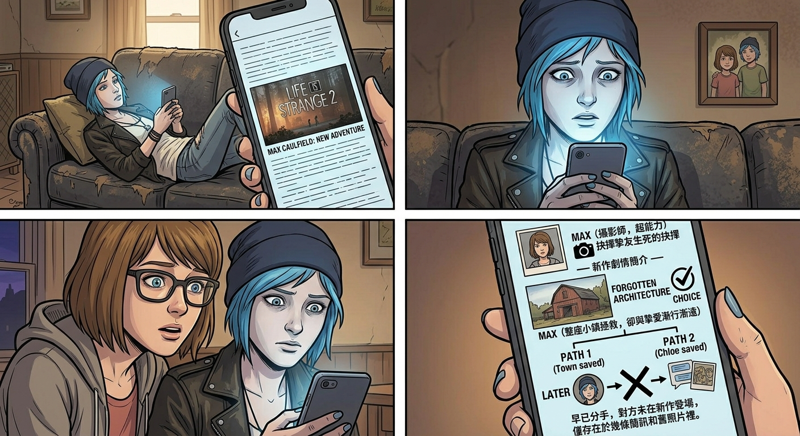

鏡子裡的陌生人

一、詭異的巧合
Chloe 窩在沙發上滑手機,漫無目的地逛著遊戲新聞,忽然整個人僵住,螢幕的光映在她瞬間發白的臉上。
「Max。」她的聲音有點抖,「妳快過來看這個。」
Max 湊過去,看清螢幕上的內容,同樣愣住了。
那是一款幾年前發售的遊戲,女主角名叫 Max Caulfield,身分是一名攝影師,擁有某種超能力,故事背景是她大學時期經歷過一場關於摯友生死的抉擇——而續作的劇情簡介裡,赫然寫著這名 Max,和她當年那個「拯救了整座小鎮、卻與摯愛漸行漸遠」的女友,如今早已分手,對方甚至沒有在新作裡正式登場,只存在於幾條簡訊和舊照片裡。
「這……」Chloe 的聲音發緊,「這是巧合嗎?」
「巧合到有點嚇人的地步。」Max 皺眉,一條一條往下滑劇情摘要,臉色越來越複雜。
二、集體吐槽大會
消息很快在小隊群組裡炸開。
「妳們是說,」Warren 語音那頭傳來難以置信的聲音,「有款遊戲,主角剛好也叫 Max,劇情剛好也是『倒流時間、拯救摯友、犧牲小鎮』,然後續作直接把『摯愛』寫成分手,對方連正式登場都沒有?」
「而且對方連名字都沒改,」Brooke 補了一句,語氣裡帶著點發毛,「這也太離譜了吧,聽起來像是在照著妳們的人生寫同人小說,寫到一半編劇跑了,換了個完全不懂前情的人接手,隨便亂編一個結局交差。」
Kenji 沉默了幾秒,調出一些網路上的相關討論串,聲音裡難得帶上一絲不易察覺的認真。
「玩家社群的評價很兩極,」他總結道,「有不少老玩家的憤怒點,是覺得當年那個角色做出的犧牲——背負整座小鎮的重量——最後支撐這個選擇的情感核心,在續作裡被寫得無比輕描淡寫,好像那份感情根本沒那麼重要。」
Max 皺著眉,忽然開口:「我不太懂,如果他們想寫一個新故事,為什麼不乾脆做一個全新的 IP,取一組全新的角色名字?非要蹭一個十年前就已經完結、劇情核心早就被定死的舊角色,還要冒著把老粉絲寫到心寒的風險,這樣做的意義到底是什麼?」
「這就是恰飯的邏輯了。」Warren 語氣裡帶著一絲見怪不怪的老練,「妳想想,一個全新的 IP,從零開始,沒人知道妳的角色是誰,行銷預算得砸多少才能讓人買單?但只要沿用『Max Caulfield』這個名字,標題上打出『初代主角回歸』六個字,老玩家的情懷濾鏡瞬間自動加成,首週銷量至少先保底一大截。」
「說白了,」Brooke 補充,語氣裡帶著點嘲諷,「這是『用最小的創作成本,換最大的話題度和購買力』。真正原創一個角色要從頭建立情感連結,風險高、回報慢;蹭一個大家已經投入過真感情的舊角色,哪怕寫得爛,罵聲本身都能變成免費宣傳,吵得越兇,話題度反而越高,銷量圖表照樣往上走。」
Kenji 點頭附和,語氣一如既往地冷靜:「這跟上次那款《真菌危機》的邏輯其實是同一套——爭議即流量,情懷即變現工具。真正做原創、擔風險的作品,遠不如『站在已故IP的肩膀上,再親手把它拆了當噱頭』划算。」
Chloe 死死盯著螢幕上那張截圖,手指微微發抖。
「如果,」她的聲音很輕,「如果真的有人這樣寫我們的故事……把我們那晚在風暴裡的選擇,寫成『後來覺得不合適,就分開了』——」
她說不下去了,喉嚨像是被什麼堵住。
三、後怕與荒謬並存
Max 握住她的手,能感覺到那雙手心裡沁出的冷汗。
「這不是我們的故事。」Max 的聲音很穩,像是既在安撫 Chloe,也在說服自己,「只是一款遊戲,一個巧合到詭異的角色設定,僅此而已。」
「我知道,」Chloe 苦笑了一下,眼眶卻有點發熱,「我知道這聽起來很蠢,一款遊戲而已,幹嘛這麼大反應。但妳不覺得毛骨悚然嗎?好像有個平行世界的版本,長得跟我們一模一樣,結果被隨便寫死、寫散、寫成兩個路人。」
「那我們就證明他們錯了。」Max 忽然開口,語氣裡帶著一種近乎倔強的篤定,她抬手,輕輕碰了碰 Chloe 的臉頰,「不管遊戲裡那個 Max 和 Chloe 怎麼樣,我們是我們。我們沒有分開,我們現在就好好地坐在這裡,握著彼此的手。」
Chloe 怔怔地看著她,原本堵在喉嚨裡的那股酸澀,漸漸被一種踏實的溫暖取代。
「妳這話,」她終於笑出聲,雖然眼角還帶著點濕意,「說得比什麼安慰台詞都管用。」
「因為這是事實,」Max 也笑了,把她整個人攬進懷裡,「不是安慰。」
四、不速之客
隔天在學校走廊,兩人還在小聲討論著昨晚那款遊戲的事,Victoria 恰好經過,一眼就瞥見 Chloe 手機螢幕上那個熟悉的角色名字——不知道是誰把這件事的截圖傳到了年級群組裡,消息顯然已經傳開了。
「聽說了,」她停下腳步,居高臨下的語氣裡帶著一貫的挑釁,「妳們昨晚為了一款遊戲的劇情,在群組裡哭得死去活來?就因為裡面有個角色剛好也叫 Max,然後跟女朋友分手了?」她意味深長地上下打量兩人,「這反應是不是有點太大了,搞得好像遊戲寫的就是妳們本人一樣。」
Chloe 剛想反唇相譏,Victoria 卻自顧自地繼續往下說,語氣裡忽然多了一絲不易察覺的酸澀。
「不過,」她頓了頓,目光落在兩人交握的手上,停留了比平常更久的幾秒,「妳們這種……不管遇到什麼破事都能死心塌地黏在一起的關係,倒也不是誰都能有。」
Chloe 挑眉,一時沒反應過來:「妳這話是誇我?」
「我沒有,」Victoria 立刻收回目光,恢復一貫的傲氣,語氣快得像是想蓋過剛才那句失言,「我只是客觀陳述一個現象。」
她扶了扶額前的頭髮,補上一句聽起來像是要挽回場面、實際上更顯得心虛的話:「反正,妳們這種廉價的感情戲碼,跟我這種人是沒什麼共鳴的。」
說完,她轉身快步離開,腳步比平時快了不少,幾乎是落荒而逃的架勢。
Max 看著她的背影,若有所思:「她剛才那個表情……」
「羨慕吧,」Chloe 一針見血地下了結論,語氣裡帶著點意外的了然,「她那個家庭,聯姻算計一堆,搞不好她自己都不知道什麼叫『死心塌地』。」
「妳倒是看得挺透。」
「畢竟,」Chloe 聳肩,握緊了 Max 的手,嘴角勾起一抹得意的笑,「我這輩子最擅長的,除了闖禍,大概就是看穿嘴硬的人了。」
五、尾聲的碎碎念
過了好一會兒,氣氛終於重新輕鬆下來,Brooke 在群組裡幽幽地補了一刀。
「說真的,」她打字道,「如果哪天真有人要把妳們的故事寫成遊戲續作,我強烈建議你們親自審稿,不然照這個先例,誰知道會被寫成什麼德性。」
「親自審稿?」Chloe 挑眉,忽然來了興致,「我倒要看看誰敢亂寫。」
「妳確定妳審得完?」Warren 忍不住吐槽,「妳跟 Max 這幾年惹出來的事,隨便一數都能寫出好幾部續作了,旅館、廣播事件、AI體育課、女僕日、辭職風波……」
「還有那次跟侵——」Brooke 剛想接話,立刻被 Kenji 一句「打住,那個不能提」堵了回去。
眾人在群組裡笑鬧成一片,原本沉重的氣氛徹底煙消雲散。
Chloe靠在 Max 肩上,望著手機螢幕上那款早已被她劃掉、不打算再點開的遊戲頁面,輕輕嘆了口氣,語氣裡帶著失而復得般的慶幸。
「不管別的世界怎麼寫,」她低聲說,「至少這個世界裡,我們的結局,是我們自己選的。」